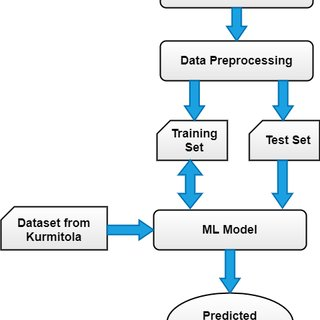

AI Diabetes Risk Assessment
Click the button below to access an AI-powered Diabetes Detection Tool.
Use AI for Diabetes DetectionUnderstanding Diabetes
Diabetes is a chronic condition that affects the body's ability to process blood sugar (glucose). It can lead to serious health issues, including heart disease, kidney damage, and nerve problems. The two most common types of diabetes are:
- Type 1 Diabetes: An autoimmune disease where the body doesn't produce insulin.
- Type 2 Diabetes: A condition where the body becomes resistant to insulin or doesn’t produce enough.

Why Use AI in Diabetes Detection?
AI is transforming healthcare by providing faster, more accurate diagnoses. Here's how AI improves diabetes detection:
Early Detection: AI can identify risk factors before symptoms appear.
Personalized Assessment: Machine learning analyzes individual data for customized risk scores.
Continuous Monitoring: AI systems provide real-time health tracking and alerts.
How AI Predicts Diabetes
AI uses various data inputs such as glucose levels, family history, lifestyle factors, and medical records. The prediction process involves the following steps:
| Step | Process | Impact |
|---|---|---|
| Data Collection | Gathering medical records, blood sugar levels, and lifestyle data. | Creates a detailed health profile for accurate analysis. |
| Pattern Recognition | AI analyzes patterns in health data, identifying early signs of diabetes. | Uncovers hidden risks for early intervention. |
| Risk Scoring | AI assigns a personalized risk score based on data analysis. | Facilitates preventive measures and lifestyle changes. |
Key Statistics
Annual Deaths: 4 million (due to complications from diabetes)
AI Accuracy: 90% in predicting Type 2 Diabetes
Detection Speed: Faster than traditional diagnostic methods
Early Detection Benefit: 70% Lower Risk of Complications